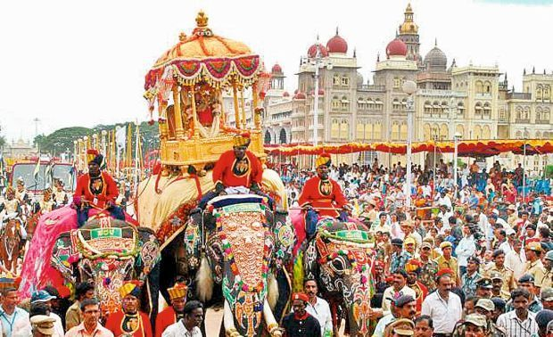

Welcome to Karnataka!

Karnataka, located in southern India, is renowned for its rich cultural heritage, diverse traditions, and
historical significance. The culture of Karnataka is a vibrant tapestry woven from the customs, arts, festivals,
and cuisine of its various communities, reflecting its ancient roots and dynamic present.
Festivals are integral to Karnataka's cultural fabric. Mysuru Dasara, celebrated in Mysore, is a grand spectacle
featuring a procession of caparisoned elephants, cultural performances, and vibrant festivities, honoring the
victory of good over evil. Ugadi, the Kannada New Year, is marked with rituals, traditional feasts, and the
decoration of homes with mango leaves and rangoli designs. The state also celebrates Ganesh Chaturthi, Navaratri,
and Deepavali with fervor, showcasing its religious diversity and cultural richness.
Karnataka’s cuisine is a delightful blend of flavors and ingredients. Traditional dishes like Bisi Bele Bath
(spicy rice and lentil dish), Ragi Mudde (finger millet balls), and Mysore Pak (sweet made from gram flour and
ghee) are popular across the state. Coastal Karnataka is famous for its seafood delicacies, including Mangalorean
fish curry and Neer Dosa (rice crepes). The cuisine reflects Karnataka's agricultural abundance and culinary
innovation.
Music and dance are integral to Karnataka’s cultural heritage. Classical dance forms like Bharatanatyam,
Kuchipudi, and Kathakali are practiced and performed with grace and precision. Yakshagana, a traditional
dance-drama form, and Dollu Kunitha, a dynamic drum dance performed by the men of the Halakki Vokkaliga community,
are popular folk arts. Karnataka’s rich musical tradition includes Carnatic music, with composers like Purandara
Dasa and Tyagaraja contributing significantly to its classical repertoire.
Karnataka’s architectural heritage is celebrated for its diversity and historical significance. The state is home
to magnificent temples like the Hoysala temples of Belur and Halebid, renowned for their intricate carvings and
architecture. The Badami Cave Temples, built during the Chalukya dynasty, and the Vijayanagara Empire’s
architectural marvels in Hampi are UNESCO World Heritage sites that attract history enthusiasts and tourists from
around the globe.
Handicrafts in Karnataka showcase the artistic skills and craftsmanship of its artisans. Mysore silk sarees, with
their rich colors and intricate zari work, are renowned for their quality and craftsmanship. Sandalwood carving
from Mysuru, Bidriware from Bidar, and Channapatna toys from Channapatna are other notable crafts that highlight
the state’s artistic heritage and traditional craftsmanship.